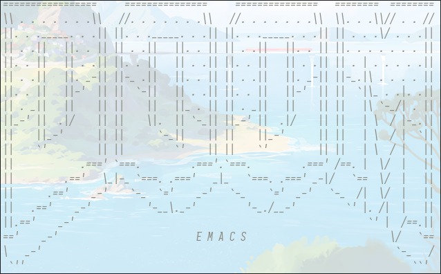

2025-06-10 - Transition from Obsidian to Emacs

Introduction
If you are not familiar with Obsidian, it is a markdown note taking application, made to link your thinking. It is very popular in the productivity world, as it allows you to link to other notes in your Vault (directory where your notes are stored) to see the relationship with eachother. Obisidan is also expandable and customizable, allowing you to download plugins and themes so you can configure it to your liking. Another benefit is that all of your notes are hosted locally.
I have been using Obisidan since 2021, so almost 4 years. I currently have 3134 notes in my vault, inlcuding image attachments and pdfs. A lot of those notes include daily notes, which I would use more of a dashboard to show what I worked on for the day. I used Obisidan to track everything in my life, from personal projects and interests, to my work notes and more.
I had a few reasons for me to consider changing over from Obsidian to Emacs, spefically Doom Emacs. The first reason is that I transitioned from using a M1 Macbook Pro everyday, to now my old gaming laptop with Arch Linux. If you are intrested to see my current gear, you can see it on my homelab repo or on my gear page here on my site. I will most likely write a blog post about switching over to Linux as well. As a side note, this is only my second blog post so I am getting more into writing these.
The second reason that considered switching from Obsidian was due to it being ran be electron. Electron is a framework to build web applications using JavaScript, HTML, and CSS. Spotify and many other apps are built with this software. Due to the size of my Obsidian Vault, it was starting to slow down a lot for me. When I was still going back and forth between my Macbook and my current gaming laptop, I had syncthing setup so I can have my notes in both places. Since I was getting more into the ecosystem of Linux, I was using grep and other tools to search through my notes and realized how fast it was, it was game over after that.
Note taking with Emacs
As a side note, I am not necessarily new to Linux, I first started toying with Linux around 2022, but just more recently became more serious and using it as a daily driver. I would say my note taking in Emacs is dialed in but also simple, which is something I love about using Emacs and Linux.
First of all, I use org-mode to write all of my notes. If you aren't familiar, org-mode is a structued note taking package within Emacs, which is very similar to markdown. It can also handle task and project management, with scheduling tasks and even giving an agenda view of the day, which has replaced my calendar/todoist completly. In my standard org directory, it's where I place all my tasks organized by different parts of my life. For example, I have a work.org, or trips.org. I wasn't doing much of the tasks in Obsidian, it's a comparable feature but org-mode does it better in my opinon.
Second, I use org-roam. This would be more comparable to Obsidian than standard org-mode. Org-roam is also considered a personal knowledge managment (PKM) system. If you combine it with org-roam-ui, you also have the same graph view that all Obsidian viewers know and love. I would personally use the local graph vs the overall graph. Org-roam works the same as normal org-mode and Obisidan, where you have separate files for each note. These are the similar notes I would have in Obisidian, where it can be anything like research on subject or documentation.
Conclusion
My first notes only date back to March of this year (2025), so I am very much getting into the flow of things. My tranisition has been easy also due to the fact that since Obsidian saves all notes locally, I can just open up the markdown file in Doom Emacs and I have all of my notes.